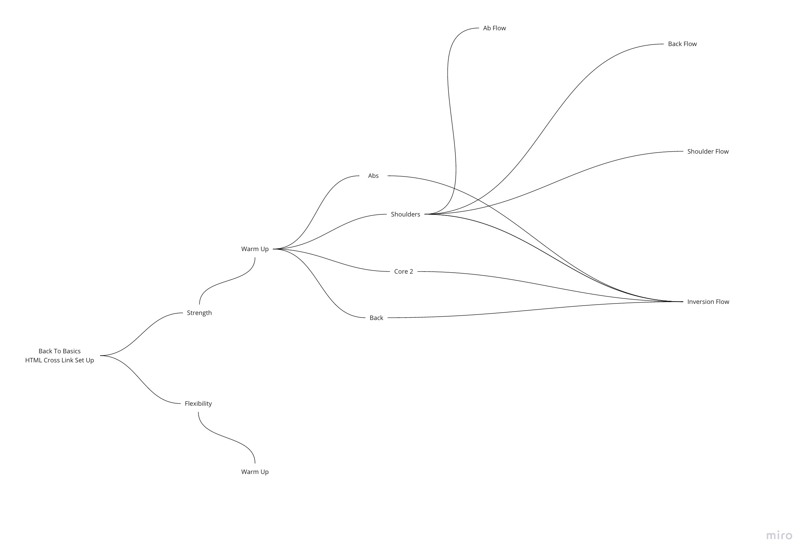
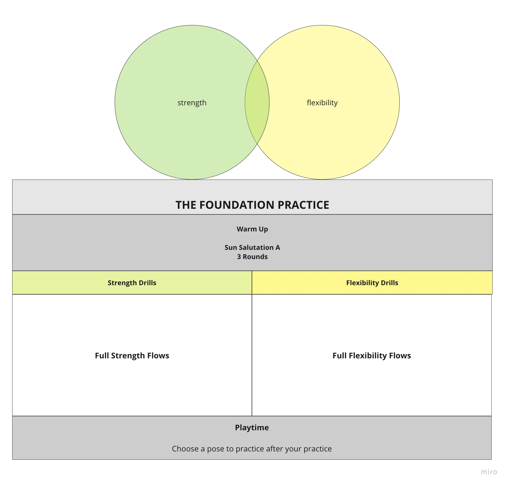

This website will lead you to and through different flows, all suited to build a foundation in strength and flexibility.
In a "choose your own adventure" fashion, you will follow Alice down the Rabbit hole and make different choices
that will ultimately lead you to your practice of that day.

To begin with, you choose between a path of either
For a full flow you then choose
- a warm-up + drill
- full flow
- playtime
You can of course also simply choose to only do the warm-up + drill, if you are only craving a short practice or want to flow on your own.
If you want to go further, you progress from the warm up to the full themed flow> and end with a shavasana to finish off your practice.
If you want to dive deeper into certain specific poses (e.g. strength: crow, chaturanga; flexibility: foward fold), you can add some playtime
to your practice.
